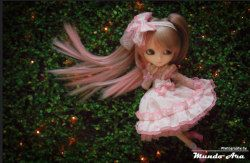
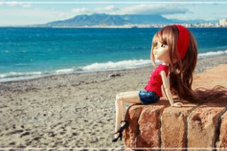

Vargen ylar i natten skog Han vill men kan inte sova Hungern river hans vargabuk Och det är kallt i hans stova
感受停在我发端的指尖如何瞬间 冻结时间记住望着我坚定的双眼也许已经 没有明天 面对浩瀚的星海我们微小得像尘埃漂浮在 一片无奈 缘份让我们相遇乱世以外命运却要我们危难中相爱

Бежит река, в тумане тает,Бежит она, меня дразня.Ах, кавалеров мне вполне хватает.Но нет любви хорошей у меня.
Забыть невозможно касаний твоих,С тобою делила весь мир на двоих.Забыть и уйти, и всё отпустить -Просто порвать между нами нить.
[ Chorus: ]I blame you for the moonlit skyAnd the dream that diedWith the Eagle's flight.I blame you for the moonlit nights
Шёл казак на побывку домой, Шёл он лесом дорогой прямой, Обломилась доска, подвела казака, Искупался в воде ледяной.
Дивлюсь я на небо — та й думку гадаю:Чому я не сокіл, чому не літаю?Чому мені, Боже, ти крила не дав?Я б землю покинув и в небо злітав,
Моря гладь и шум волны передо мной,Но сегодня мы не встретились с тобой!Ты ушла, и стала мутною вода!Ты ушла и не вернешься никогда!
Вспоминай меняЗимним вечером, летним днём,Под солнцем раскалённым,Под долгим, проливным дождём.

Я не верю в счастьеВсе как будто не со мнойБыли мы так близкоВ этой тишине ночнойЭтих дней ушедшихНезабытые слова
Теплоходный гудок разбудил городок,На причале толпится народ.Все волнуются, ждут: только десять минутЗдесь всего лишь стоит теплоход,
Я буду долго гнать велосипед.В глухих лугах его остановлю.Нарву цветов.И подарю букетТой девушке, которую люблю.Нарву цветов.
В час, когда приходит ночьИ, как вчера, точь в точьМой день в тишине растает,Мне волшебница лунаНа струнах из дождя
Тишина, где каждый звукСлышишь. Слышишь...Это танец моих рук,Он придуман для тебя.Это песня моих снов,Видишь, видишь?
Hoy en mi ventana brilla el solY un corazón se pone tristeContemplando la ciudadPorque te vas
Как побегПрогулки по улицам,Где суета кружится,Где у тоски нет лица,Забыться в кафе ночном,Где не были мы вдвоем,
En osaa sanoo sanaakaanEt kai mun runoutta enää kuulekaanYksi mykkä ja yksi kuuroEi yhteyttä, linja on huono
Говорила, что меня не виделаОбнимала и тихо ненавиделаОбещала быть моей любимоюИ глазами хлопала невиннымиИ на все, на все мои признания
Налегке мы плывём с ветерком.В сентябре, босиком мы тайком. По щеке проведи ты рукой,Уголки моих губ успокой.И что меня ждёт?
Я думала, ты придёшь, Хотела в твои глаза ещё посмотреть тепло. Опять между нами дождь, и десять шагов назад.Куда это привело?